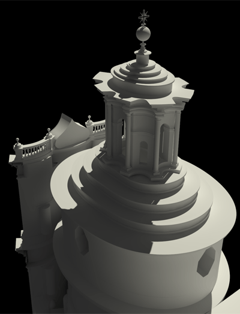

Solomonic column with composite order capital
Building Case Studies
Observation, research, and analysis into notable examples of architecture.
Understanding successful designs by recreation, modeling, and drawing. Knowing what works from the past can be used to influence the work of today and tomorrow, building off the skills of our predescessors. In any age, architecture can be considered a method of elegantly solving physical problems, which surpasses the individual style and taste of any individual work.
San Carlo Alle Quattro Fontane
- Type: Religious
- Date: 1646
- Location: Rome, Italy | Quirinal District
- Architect: Francesco Borromini
The design conveys a sense of tension and compression within the various levels, a pulling towards heaven, and light streaming from above. Each quality is meant to create an emotional response typical of the Baroque period. The understanding of classical design principles and motifs is clear, but the rules and elements are manipulated in new imaginative ways. This study was primarily focused on understanding the advanced geometry and forms used in the architectural elements as well as how they all relate to heighten the concept.
Construction geometry and regulating lines. The main themes of compression and tension are demonstrated in the geometry by use of intersecting ovals and ellipses as opposed to pure circles or arcs.
Cross section
Longitudinal section
Longitudinal section perspective
Main facade, light and shadows at various times of day highlight the sculptural detailing.

Main entry view
Street view showing the undulating facade

Lantern of the dome admits light from above. This style of lantern is a common motif of Borromini, and is based on the classical Roman Temple of Venus at Baalbek, Lebanon.
Secret window at facade provides light for altar
View from floor level up to dome
View from top of dome towards floor level
View from interior showing intricate coffered dome
Fisheye views of the church highlighting geometric patterns of the architecture.
St Paul's Cathedral
- Type: Religious
- Date: 1710
- Location: London, England, UK | Ludgate Hill
- Architect: Christopher Wren
Multiple churches have existed on this site over the past nearly 2000 years. When the Great Fire of London in 1666 burned down the previous St Paul's Cathedral, a new rebuilding of the city as well as the cathedral was a tremendous opportunity to showcase the best of English design and power. Classicism, newly popular in England, would serve as the style for a grand new church to compete with other contemporary examples in mainland Europe. This study was based primarily on exploring the structural resolution and expression of the famous dome.
Construction geometry and regulating lines. The design requires the weight of the dome to be transferred to the circular drum, then to eight circular arches, and then to four large piers which connect to the foundations. The classical, English Baroque design of the church keeps the form of the earlier gothic cathedral while using pure circular arches and Roman proportions instead of pointed, narrow vaults typical of gothic.
Elevation and section detail of dome.
Elevation and section through crossing of the church.


The lantern is accessible by visitors and maintenance teams alike.
The outer dome, inner dome, and lantern are supported by a large brick cone. Multiple levels of balconies, galleries, and stairs are used to ascend to the top of the lantern for maintenance and multiple openings and windows allow light to enter the interior of the church as if from the heavens. The outer dome is lead roofing sheets tied to the brick cone by wooden trusses. The inner dome is plaster suspended from the brick cone. The lantern is a massive stone structure resting on the top of the brick cone, its weight transfered to the dome base drum through the cone.

The dome with its ascending tiers served structurally and visually as the inspiration for the dome of the United States Capitol Building in Washington, DC. However, the US Capitol used stronger, more advanced cast iron trusses instead of massive masonry supports.
Crypt housing theSarcophagus of Admiral Horatio Nelson, hero of the Battle of Trafalgar.